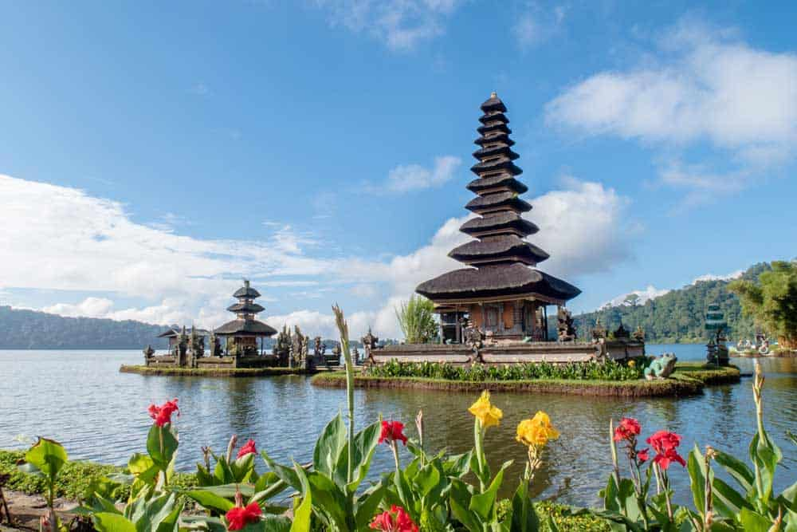
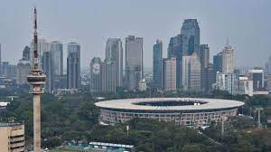
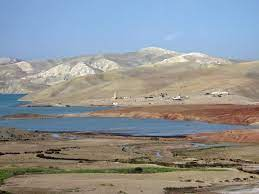
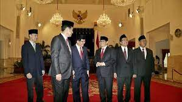
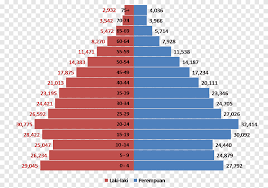
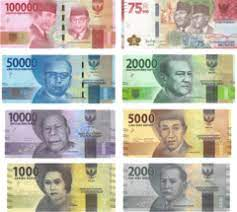
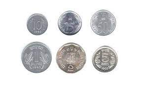

INDONESIA
INDONESIA
NOMBRE OFICIAL
Republica de indonesia.

Capital
Su capital es Yakarta


Superficie
Indonesia, situada en Asia sudoriental, tiene una superficie de 1.916.862 Km2, por lo que puede considerarse un país grande. Indonesia, con una población
de 272.249.000 personas, es uno de los países más poblados del mundo 142 habitantes por Km2.
 Clima
Clima
El clima de Indonesia está profundamente influenciado por su ubicación a lo largo de la línea del ecuador y la presencia del mar. Esto da como resultado
un clima tropical húmedo que se vuelve relativamente más seco hacia el sureste. Las temperaturas son estables durante todo el año, con variaciones mínimas
RÍOS/MARES PRINCIPALES

El punto más alto de Indonesia es el Puncak Jaca, en Papúa. En cuanto al Toba, situado en Sumatra, es el lago volcánico más grande. Los ríos más
largos del país son el Mahakam y el Barito que sirven de medio de comunicación y de transporte entre las instalaciones habilitadas en las orillas de los ríos.

- El río Oum Er-Rbia
- El río Sebú
ALTITUD
La mayor parte de las grandes islas son montañosas, con picos que oscilan entre 2.000 y 3.000 m sobre el nivel del mar en Sumatra, Java, Bali,
Lombok, Sulawesi y Seram. Las cimas más altas del país se encuentran en las montañas Jayawijaya, en Nueva Guinea, y en las montañas Sudirman, en Papúa.
- Punto más alto: 4.884 (Puncak Jaya)
- Punto más bajo: 0 m

TIPO DE GOBIERNO


Según la Constitución de 1945, el principal poder ejecutivo de Indonesia es el presidente, elegido por un plazo de cinco años por el voto popular.
Anteriormente era designado por un cuerpo nacional denominado la Asamblea Consultiva del Pueblo, que realiza parte de las funciones parlamentarias del país.
El presidente, que puede ser elegido durante varios periodos, tiene un amplio poder y puede gobernar por decreto; también nombra y preside el gabinete de
ministros.
POBLACIÓN
Indonesia, con una población de 272.249.000 personas, es uno de los países más poblados del mundo 142 habitantes por Km2. Su capital es Yakarta y
su moneda Rupias indonesas.

MONEDA
su moneda Rupias indonesas.Billetes y monedas de la rupia indonesia en uso
Actualmente, están en circulación monedas de 50, 100, 200, 500 y 1000 rupias. En cuanto a los billetes, circulan de 1000, 2000, 5000, 10 000, 20 000, 50 000
y 100 000 rupias.
0.0014 peso mexicano
La India fue uno de los primeros territorios en acuñar moneda, alrededor del VI siglo a.C. Se cree que la primera "rupia" la introdujo el emperador Sher
Shah Suri, y se componía de 40 partes de cobre (paise).

BANDERA
0.0014 peso mexicano
La India fue uno de los primeros territorios en acuñar moneda, alrededor del VI siglo a.C. Se cree que la primera "rupia" la introdujo el emperador Sher
Shah Suri, y se componía de 40 partes de cobre (paise).

PIB
El producto interior bruto de Indonesia en el primer trimestre de 2022 ha crecido un 0,9% respecto al trimestre anterior. Esta tasa es 22 décimas
menor que la del cuarto trimestre de 2021, cuando fue del 3,1%.
La variación interanual del PIB ha sido del 4,8%, 1 décima mayor que la del cuarto trimestre de 2021, que fue del 4,7%.
La cifra del PIB en el primer trimestre de 2022 fue de 285.842 millones de euros, con lo que Indonesia se situaba como la economía número 14 en el
ranking de PIB trimestral de los 53 países que publicamos.
PIB "per capita"
El producto interior bruto de Indonesia en el primer trimestre de 2022 ha crecido un 0,9% respecto al trimestre anterior. Esta tasa es 22 décimas
menor que la del cuarto trimestre de 2021, cuando fue del 3,1%.
La variación interanual del PIB ha sido del 4,8%, 1 décima mayor que la del cuarto trimestre de 2021, que fue del 4,7%.
La cifra del PIB en el primer trimestre de 2022 fue de 285.842 millones de euros, con lo que Indonesia se situaba como la economía
número 14 en el ranking de PIB trimestral de los 53 países que publicamos.